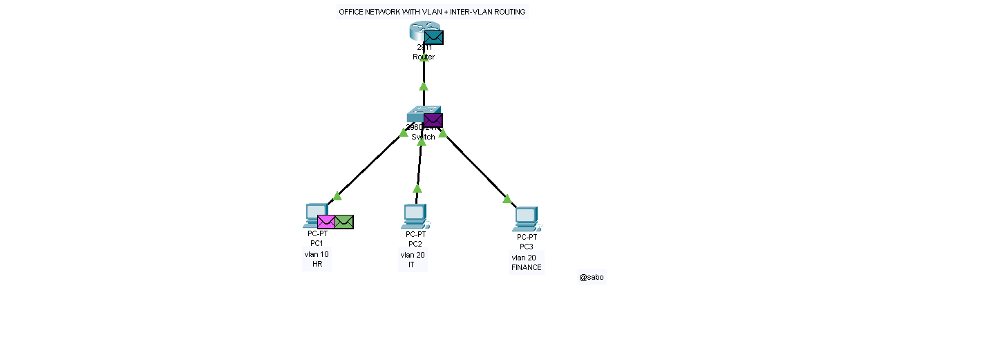
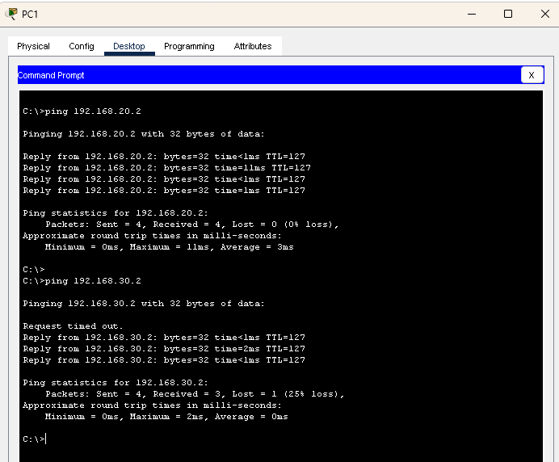

By Sabo Benson – Network Solutions Engineer
A small office with multiple departments (HR, IT, Finance) was operating on a single network. This caused security risks, unnecessary broadcast traffic, and lack of network organization. Devices from different departments could not be properly controlled or segmented.
To solve this problem, VLANs were implemented to logically separate departments into different networks. Inter-VLAN routing was configured using a router to allow controlled communication between departments.
Topology Diagram:

| Department | VLAN ID | Network | Gateway |
|---|---|---|---|
| HR | 10 | 192.168.10.0/24 | 192.168.10.1 |
| IT | 20 | 192.168.20.0/24 | 192.168.20.1 |
| Finance | 30 | 192.168.30.0/24 | 192.168.30.1 |
enable configure terminal vlan 10 name HR vlan 20 name IT vlan 30 name FINANCE interface fa0/1 switchport mode access switchport access vlan 10 interface fa0/2 switchport mode access switchport access vlan 20 interface fa0/3 switchport mode access switchport access vlan 30 interface fa0/24 switchport mode trunk
enable configure terminal interface g0/0.10 encapsulation dot1Q 10 ip address 192.168.10.1 255.255.255.0 interface g0/0.20 encapsulation dot1Q 20 ip address 192.168.20.1 255.255.255.0 interface g0/0.30 encapsulation dot1Q 30 ip address 192.168.30.1 255.255.255.0 interface g0/0 no shutdown
Connectivity between VLANs was tested using ping. Devices from different departments successfully communicated through the router.
ping 192.168.20.2 ping 192.168.30.2
Ping Result:

This solution is widely used in offices, campuses, and enterprises to separate departments, improve security, and reduce broadcast traffic while maintaining communication.
Email: sabobenson20@gmail.com
Phone: 0745866949